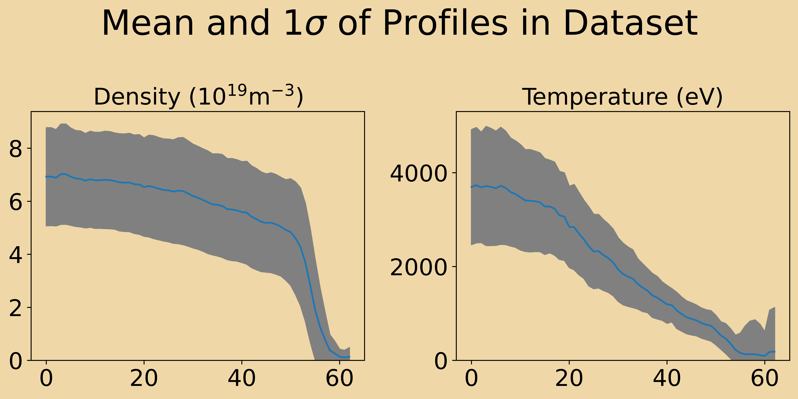
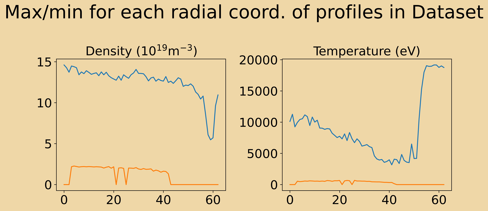

Number of Shots 1292Number of time slices 62479the goal is to keep it as raw as possible without detrimental effects to number of data points.
f = interp1d(mp_raw_time, mp_raw_data)
relevant_mp_vals = f(relevant_time_of_hrts_sample)points_to_throwaway = torch.logical_and((profiles[:, 1, -15:] > 5000), (profiles[:, 0, -15:] < 5e18))
slices_to_keep = ~torch.any(points_to_throwaway, dim=-1)Number of Shots 1292Number of time slices 62479

Well, we still have some very high values, but should work out in the end… ### Machine parameters
| Param | Mean | Sd | Max | Min |
|---|---|---|---|---|
| BTF | -2.379796e+00 | 4.824252e-01 | -9.623408e-01 | -3.668294e+00 |
| IpiFP | -2.176012e+06 | 5.596581e+05 | -8.004782e+05 | -4.498590e+06 |
| D_tot | 2.212978e+00 | 2.301933e+00 | 3.679407e+01 | -3.992906e+01 |
| PNBI_TOT | 1.491406e+07 | 5.767679e+06 | 3.282043e+07 | 0.000000e+00 |
| PICR_TOT | 1.460868e+06 | 1.802576e+06 | 8.391794e+06 | 0.000000e+00 |
| PECR_TOT | 0.000000e+00 | 0.000000e+00 | 0.000000e+00 | 0.000000e+00 |
| P_OH | 5.292353e+05 | 2.858475e+05 | 2.404499e+06 | 0.000000e+00 |
| k | 1.685709e+00 | 3.500449e-02 | 1.807394e+00 | 1.589254e+00 |
| delRoben | 2.185588e-01 | 1.002795e-01 | 5.055999e-01 | 3.957596e-02 |
| delRuntn | 3.274765e-01 | 4.319265e-02 | 5.049496e-01 | 2.308528e-01 |
| ahor | 9.249189e-01 | 1.932882e-02 | 9.787297e-01 | 8.262935e-01 |
| Rgeo | 2.906712e+00 | 1.829499e-02 | 2.973369e+00 | 2.804235e+00 |
| q95 | 3.447710e+00 | 4.237731e-01 | 6.183475e+00 | 2.520422e+00 |
| Vol | 7.547254e+01 | 2.531238e+00 | 8.268580e+01 | 5.808901e+01 |